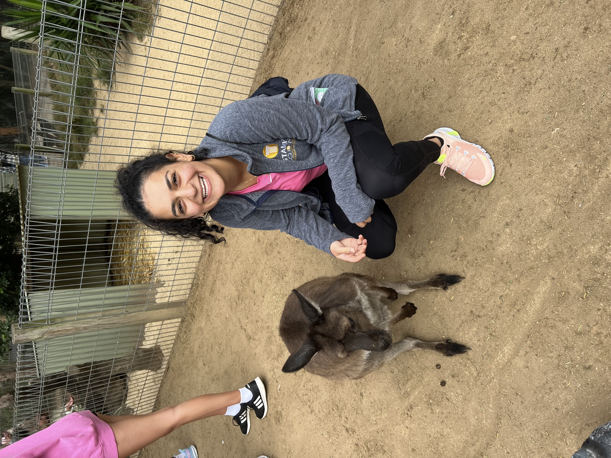
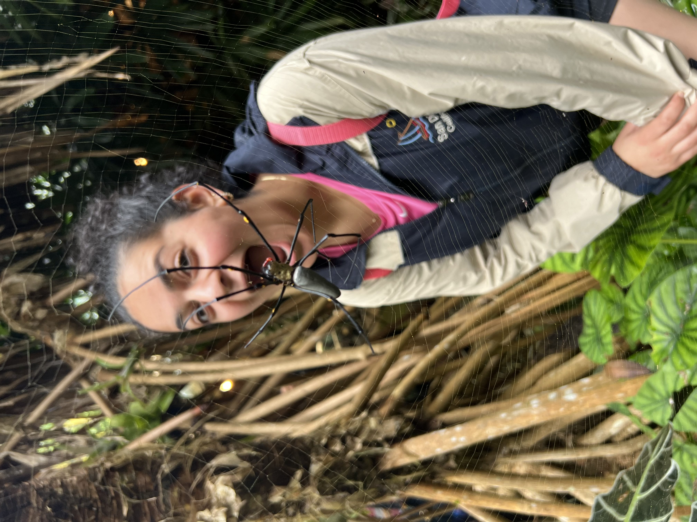
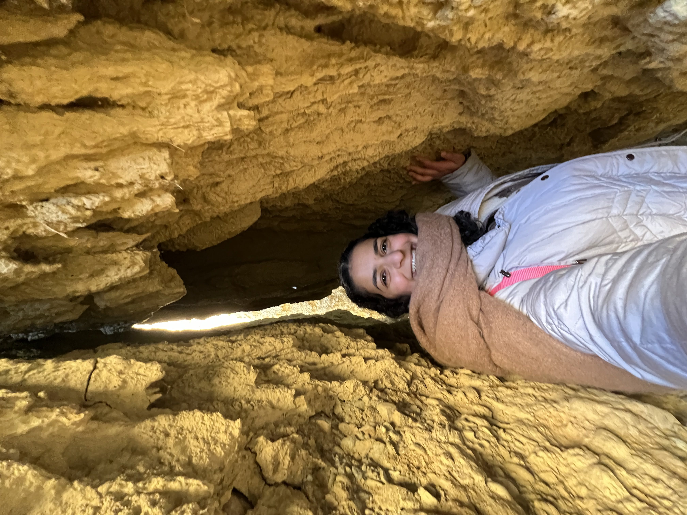
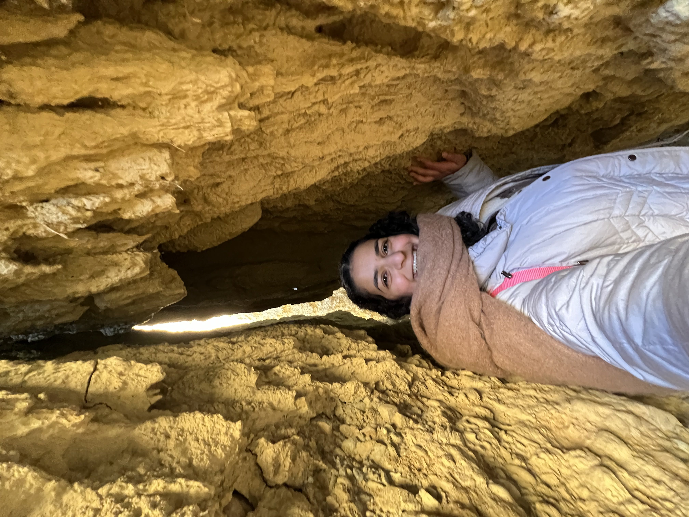

Some Information About Me...
I was born on May 17, 2004 in New Jersey. I moved to the Pittsburgh area early in my life, and I have been here ever since. I am the daughter of Egyptian immigrants and have close ties to my Egyptian roots. I would describe myself as someone who is easygoing and friendly I am currently studying Information Science at the University of Pittsburgh. Last summer, I completed a software engineering internship at PNC, and the summer before that, I studied abroad in Sydney, Australia. Look below to see me on some of my adventures, and explore the tabs on this website to learn more about my favorite things!
Photos of my adventures!
  
